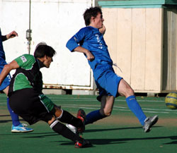
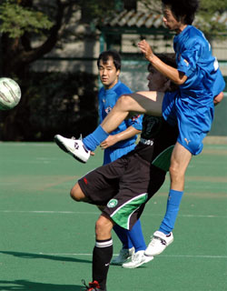
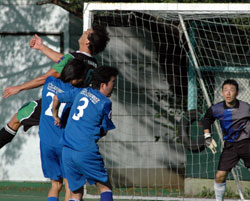

|
St Mary's, Sat 2nd Sept. After a good result at the new Oi turf pitch against Sala to inaugurate their Div 1 season last week, the Jets knew they would be in for a tougher test against the TML 1 league champion at the Hibs' bumpy St. Marys home ground. Despite rumours that the Hibs were missing a few key players, the Jets, also missing a few strong players, started the game cautiously with just one up front.
Under the blazing afternoon sun, the Hibs came out of the blocks flying with serious intent, attacking in numbers, and stringing some pretty silky passes together. The Jets, on the other hand, were struggling with the bouncy turf, their own match fitness/first touch, and the pace and defensive pressure of their opponents. A few minutes in, an ill-advised back pass from the Jets midfield and a subsequent defensive bauble by Canadian Matt Turner under little pressure left a Hibs striker free just 12 yards out. He duly scored via the Jets silver platter. Unlucky, but welcome to the first division!
This basic early error demoralised the Jets who had been hoping to hold off the Hibs. The second came from a corner as the Hibs outnumbered the disorganised Jets in the box. Although the Jets were struggling to get their rhythm in the first half, they still created a few chances and with better defensive organisation it would have been a better game. Unfortunately, several clean looks at goal failed to hit the target ---- perhaps due to the distractive glare of the sun reflecting off the Hibs keeper's rather bright pink(ish) uniform……a Jorge Campos fan one could assume?! Anyway, the Hibs were dangerous throughout the half with much stronger finishing and scored their 3rd seconds before the break. At halftime; Jets 0, Hibs 3.
In second, the Jets changed formation and played with 2 attackers, held possession for longer periods, and generally improved the quality of their play. The Hibs, however, still managed to score again.
Midway through the half, the Jets were awarded a penalty---which Nate confidently finished with a top right corner strike. Lifted by the goal, the Jets produced 10 or 15 minutes of sustained pressure and new signing Shimizu opened his Jets scoring account with a low, well-struck drive past the outstretched gloves of the Hibs' resident Campos fan.
The Hibs, suddenly on their heels, started getting a bit more vocal about challenges and the officiating. Was this comeback in the making? Not this time. The TML champions scored their 5th and final goal to put the final nail in the Jets coffin--- a seemingly harmless cross that somehow sailed directly into the back of the Jets net. Final Score: Jets 2, Hibs 5.
The positive spin for the boys in blue-----The Jets were disappointed with the level of their play, yet they still had their moments against a decent Hibs side and with better defending the game would have been much closer.
Report – Simon Benz
|